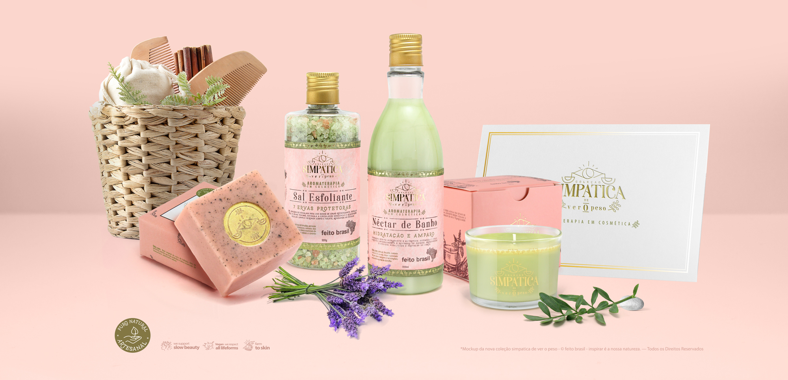
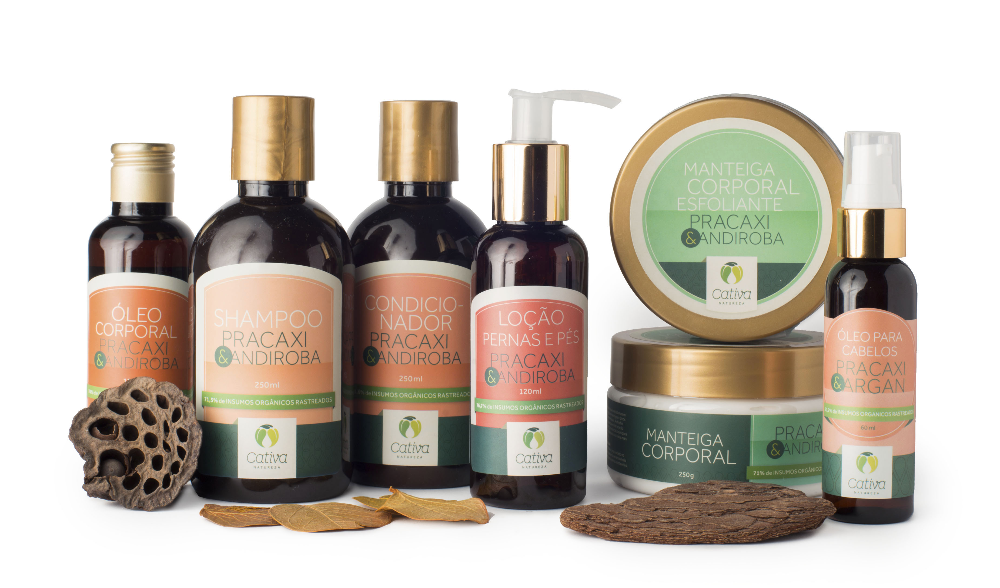
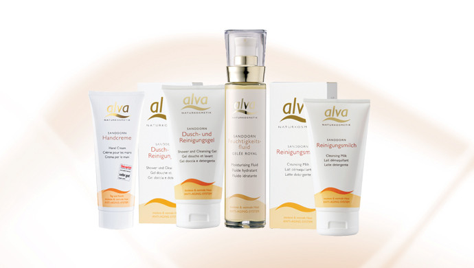
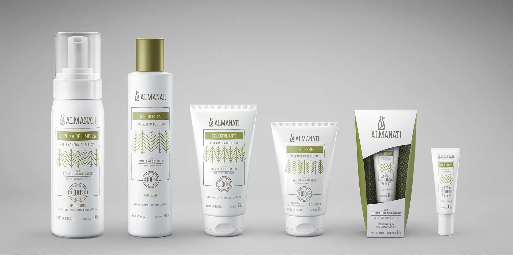
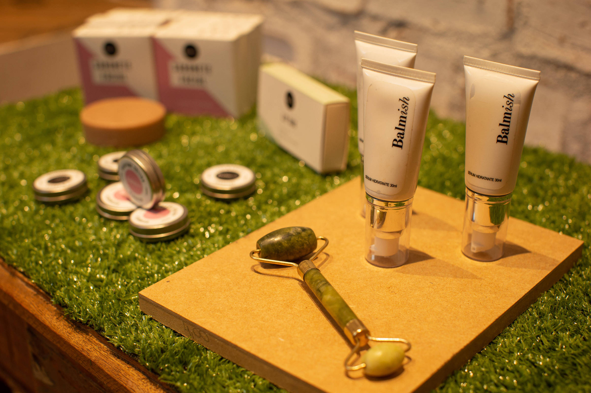

“A Terra foi criada para todos nós, não para alguns de nós. ”
Marcas veganas
Feito Brasil: Feito Brasil é uma marca de cuidados com a pele focada em ingredientes naturais e na produção artesanal. Desde 2004, oferece cosméticos conceituais, irreverentes que defendem uma causa e celebram a natureza, arte e culturas brasileiras com produtos naturais e 100% veganos. Uma marca consciente e preocupada com a sustentabilidade, a Feito Brasil carrega um forte DNA brasileiro. Sempre com um sensorial e fragrância únicas, que transformam o cuidado com a pele em uma experiência única e envolvente.

Cativa Natureza:A Cativa Natureza é uma marca brasileira de cosméticos naturais com produtos veganos e orgânicos de cuidados com a pele e cabelo, skincare e maquiagem. Confira a seleção completa de produtos Cativa Natureza: óleos essenciais, hidratantes, séruns, máscaras de argila e muito mais.

Alva:Criada em 1988, a Alva Naturkosmetik é uma marca alemã de Cosméticos Naturais, Veganos e Orgânicos de alta performance, que alia tecnologia ao zelo pela saúde, pela natureza e pelo meio ambiente. Na Use Orgânico você encontra dezenas de produtos Alva formulados com ingredientes orgânicos certificados pela Ecocert, que oferecem Beleza, como o Batom Orgânico Coleur, Tratamentos e Cuidados Especiais para todos os tipos de pele e cabelos, como Desodorantes Orgânicos, Sabonetes Corporais Orgânicos, Shampoos e Condicionadores Orgânicos e muito mais.

Herbia:Nascida no ano de 2005, em Joinville, Santa Catarina, a marca Herbia iniciou seus negócios no cultivo de diversas plantas aromáticas que posteriormente eram destiladas para a criação dos óleos essenciais, que hoje são base dos Cosméticos Naturais, Veganos e Orgânicos diferenciados da marca. Na Use Orgânico você encontra toda linha de Óleos Essenciais Naturais e Orgânicos da Herbia, além de Fraldas para Bebês Descartáveis e Ecológicas, Condicionadores Orgânicos, Máscaras para Cílios Orgânicas e muito mais.
Almanati:Criada em 2016, a brasileiríssima Almanati é uma marca de Cosméticos 100% Naturais feitos com matérias-primas de origem orgânica e biodinâmica. Seus produtos, de fórmulas inovadoras levam aloe vera no lugar da água, são totalmente livres de conservantes químicos, corantes, parabenos e outras substâncias altamente nocivas para a pele e para o meio ambiente. Na Use Orgânico você encontra os melhores produtos da Almanati certificados pelo IBD, como o Creme Hidratante Facial Natural, Loção Hidratante Corporal, Creme Hidratante Facial para Homem e muito mais!

Balmish:Página oficial da Beleza do Campo, loja online especializada em cosméticos e produtos naturais, orgânicos, veganos, fitoterápicos, antroposóficos e ayurvédicos. As melhores marcas reunidas em um só lugar, com produtos não testados em animais e produzidos com extratos de plantas, manteigas vegetais e óleos essenciais. A Beleza do Campo adota uma filosofia de transparência radical em relação às formulas vendidas e ao funcionamento dos princípios ativos, estimulando o consumo consciente.

Shoes:Somos uma marca de sapatos e acessórios veganos e ecológico, feitos no Brasil. Na Insecta nós trabalhamos para repensar a economia, buscando alternativas de consumo e aumentando a vida útil do que já existe. Queremos polinizar o mundo com cor e consciência. Nossa missão é fazer sapatos e acessórios com impacto visual, social e ambiental. Temos o propósito de conscientizar nosso ecossistema sobre sustentabilidade, veganismo e comércio justo, incentivar novos empreendedores a trabalhar em favor do meio ambiente e mostrar para o mundo que ser consciente pode ser divertido. Nossa essência reflete os nossos valores. Não abrimos mão da estética. Acreditamos que essência é sempre maior que tendência. Não sacrificamos nenhum ser vivo para fins estéticos (ou qualquer outro fim). Lutamos ativamente pelas causas de defendemos. Trabalhamos com relações de ganha-ganha. Mantemos o diálogo aberto com quem faz, apoia e usa.
Sabemos que não somos perfeitas. Ouvimos o outro e colocamos em prática o que é construído nessa troca. Utilizamos materiais como garrafas PET recicladas, algodão reciclado, borracha reaproveitada, peças de roupas usadas, tecidos de reuso e resíduos de produção que seriam jogados fora e os transformamos em sapatos novos. Nascemos de mentes inquietas, antenas ligadas e asas prontas para criar em janeiro de 2014, na cidade de porto alegre, na região sul do país. Os primeiros pares de sapatos foram feitos a partir da ideia de reaproveitar roupas vintages do extinto brechó da sócia fundadora da marca, Barbara Mattivy. Hoje possuímos duas lojas físicas, além de mais dez pontos de venda espalhados pelo mundo. E a essência continua a mesma: vegana, ecológica e feita no Brasil.